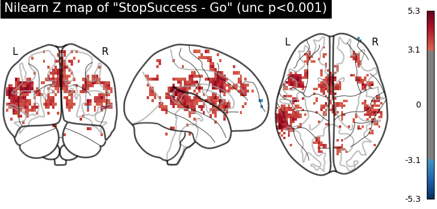
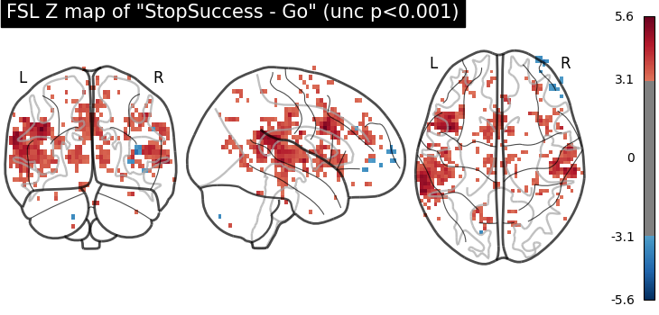
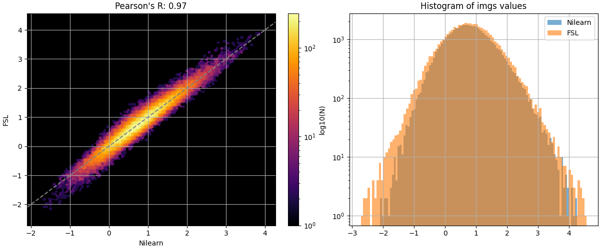
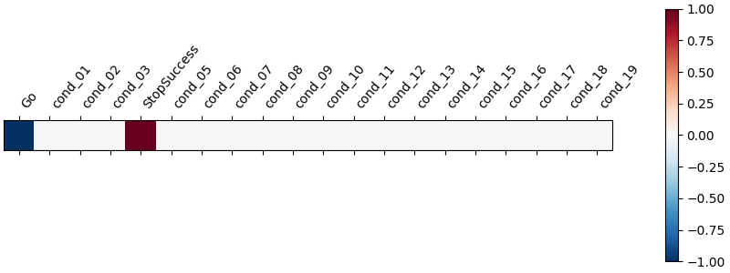
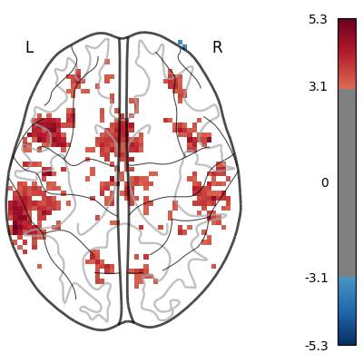

Note
Go to the end to download the full example code. or to run this example in your browser via Binder
First level analysis of a complete BIDS dataset from openneuro¶
Full step-by-step example of fitting a GLM to perform a first level analysis in an openneuro BIDS dataset. We demonstrate how BIDS derivatives can be exploited to perform a simple one subject analysis with minimal code. Details about the BIDS standard are available at https://bids.neuroimaging.io/. We also demonstrate how to download individual groups of files from the Openneuro s3 bucket.
More specifically:
Download an fMRI BIDS dataset with derivatives from openneuro.
Extract first level model objects automatically from the BIDS dataset.
Demonstrate Quality assurance of Nilearn estimation against available FSL. estimation in the openneuro dataset.
Display contrast plot and uncorrected first level statistics table report.
Fetch openneuro BIDS dataset¶
We download one subject from the stopsignal task in the ds000030 V4 BIDS dataset available in openneuro. This dataset contains the necessary information to run a statistical analysis using Nilearn. The dataset also contains statistical results from a previous FSL analysis that we can employ for comparison with the Nilearn estimation.
from nilearn.datasets import (
fetch_ds000030_urls,
fetch_openneuro_dataset,
select_from_index,
)
_, urls = fetch_ds000030_urls()
exclusion_patterns = [
"*group*",
"*phenotype*",
"*mriqc*",
"*parameter_plots*",
"*physio_plots*",
"*space-fsaverage*",
"*space-T1w*",
"*dwi*",
"*beh*",
"*task-bart*",
"*task-rest*",
"*task-scap*",
"*task-task*",
]
urls = select_from_index(
urls, exclusion_filters=exclusion_patterns, n_subjects=1
)
data_dir, _ = fetch_openneuro_dataset(urls=urls)
[fetch_ds000030_urls] Dataset found in
/home/runner/nilearn_data/ds000030/ds000030_R1.0.4/uncompressed
[fetch_openneuro_dataset] Dataset found in
/home/runner/nilearn_data/ds000030/ds000030_R1.0.4/uncompressed
Obtain FirstLevelModel objects automatically and fit arguments¶
From the dataset directory we automatically obtain FirstLevelModel objects with their subject_id filled from the BIDS dataset. Moreover we obtain, for each model, the list of run images and their respective events and confound regressors. Those are inferred from the confounds.tsv files available in the BIDS dataset. To get the first level models we have to specify the dataset directory, the task_label and the space_label as specified in the file names. We also have to provide the folder with the desired derivatives, that in this case were produced by the fMRIPrep BIDS app.
from nilearn.glm.first_level import first_level_from_bids
task_label = "stopsignal"
space_label = "MNI152NLin2009cAsym"
derivatives_folder = "derivatives/fmriprep"
(
models,
models_run_imgs,
models_events,
models_confounds,
) = first_level_from_bids(
data_dir,
task_label,
space_label,
smoothing_fwhm=5.0,
derivatives_folder=derivatives_folder,
n_jobs=2,
verbose=1,
)
/home/runner/work/nilearn/nilearn/examples/04_glm_first_level/plot_bids_features.py:85: UserWarning:
No bold.json found in BIDS folder in:
/home/runner/nilearn_data/ds000030/ds000030_R1.0.4/uncompressed/derivatives/fmriprep.
) = first_level_from_bids(
/home/runner/work/nilearn/nilearn/examples/04_glm_first_level/plot_bids_features.py:85: UserWarning: 'slice_time_ref' not provided and cannot be inferred from metadata.
It will be assumed that the slice timing reference is 0.0 percent of the repetition time.
If it is not the case it will need to be set manually in the generated list of models.
) = first_level_from_bids(
[first_level_from_bids]
Found the following 1 preprocessed BOLD files
- for subject 10159
- for filter: [('task', 'stopsignal'), ('space', 'MNI152NLin2009cAsym')]:
-
/home/runner/nilearn_data/ds000030/ds000030_R1.0.4/uncompressed/derivatives/fmri
prep/sub-10159/func/sub-10159_task-stopsignal_space-MNI152NLin2009cAsym_desc-pre
proc_bold.nii.gz
[first_level_from_bids]
Found the following 1 events files
- for subject 10159
- for filter: [('task', 'stopsignal')]:
-
/home/runner/nilearn_data/ds000030/ds000030_R1.0.4/uncompressed/sub-10159/func/s
ub-10159_task-stopsignal_events.tsv
[first_level_from_bids]
Found the following 1 confounds files
- for subject 10159
- for filter: [('task', 'stopsignal')]:
-
/home/runner/nilearn_data/ds000030/ds000030_R1.0.4/uncompressed/derivatives/fmri
prep/sub-10159/func/sub-10159_task-stopsignal_desc-confounds_regressors.tsv
Access the model and model arguments of the subject and process events.
model, imgs, events, confounds = (
models[0],
models_run_imgs[0],
models_events[0],
models_confounds[0],
)
subject = f"sub-{model.subject_label}"
model.minimize_memory = False # override default
from pathlib import Path
from nilearn.interfaces.fsl import get_design_from_fslmat
fsl_design_matrix_path = (
Path(data_dir)
/ "derivatives"
/ "task"
/ subject
/ "stopsignal.feat"
/ "design.mat"
)
design_matrix = get_design_from_fslmat(
fsl_design_matrix_path, column_names=None
)
We identify the columns of the Go and StopSuccess conditions of the design matrix inferred from the FSL file, to use them later for contrast definition.
design_columns = [
f"cond_{int(i):02}" for i in range(len(design_matrix.columns))
]
design_columns[0] = "Go"
design_columns[4] = "StopSuccess"
design_matrix.columns = design_columns
First level model estimation (one subject)¶
We fit the first level model for one subject.
model.fit(imgs, design_matrices=[design_matrix])
/home/runner/work/nilearn/nilearn/examples/04_glm_first_level/plot_bids_features.py:138: UserWarning: If design matrices are supplied, [t_r] will be ignored.
model.fit(imgs, design_matrices=[design_matrix])
[FirstLevelModel.fit] Loading data from
'/home/runner/nilearn_data/ds000030/ds000030_R1.0.4/uncompressed/derivatives/fmr
iprep/sub-10159/func/sub-10159_task-stopsignal_space-MNI152NLin2009cAsym_desc-pr
eproc_bold.nii.gz'
[FirstLevelModel.fit] Computing mask
[FirstLevelModel.fit] Resampling mask
[FirstLevelModel.fit] Finished fit
[FirstLevelModel.fit] Computing run 1 out of 1 runs (go take a coffee, a big
one).
[FirstLevelModel.fit] Performing mask computation.
[FirstLevelModel.fit] Loading data from <nibabel.nifti1.Nifti1Image object at
0x7f092625e7a0>
[FirstLevelModel.fit] Smoothing images
[FirstLevelModel.fit] Extracting region signals
[FirstLevelModel.fit] Cleaning extracted signals
[FirstLevelModel.fit] Masking took 2 seconds.
[FirstLevelModel.fit] Performing GLM computation.
[FirstLevelModel.fit] GLM took 2 seconds.
[FirstLevelModel.fit] Computation of 1 runs done in 5 seconds.
Then we compute the StopSuccess - Go contrast. We can use the column names of the design matrix.
z_map = model.compute_contrast("StopSuccess - Go")
[FirstLevelModel.compute_contrast] Computing image from signals
Visualize results¶
Let’s have a look at the Nilearn estimation and the FSL estimation available in the dataset.
import matplotlib.pyplot as plt
import nibabel as nib
from scipy.stats import norm
from nilearn.plotting import plot_glass_brain, show
fsl_z_map = nib.load(
Path(data_dir)
/ "derivatives"
/ "task"
/ subject
/ "stopsignal.feat"
/ "stats"
/ "zstat12.nii.gz"
)
plot_glass_brain(
z_map,
threshold=norm.isf(0.001),
title='Nilearn Z map of "StopSuccess - Go" (unc p<0.001)',
plot_abs=False,
display_mode="ortho",
)
plot_glass_brain(
fsl_z_map,
threshold=norm.isf(0.001),
title='FSL Z map of "StopSuccess - Go" (unc p<0.001)',
plot_abs=False,
display_mode="ortho",
)
- 
- 
<nilearn.plotting.displays._projectors.OrthoProjector object at 0x7f0924c1a5c0>
We show the agreement between the 2 estimations.
from nilearn.plotting import plot_bland_altman, plot_img_comparison
plot_img_comparison(
z_map, fsl_z_map, model.masker_, ref_label="Nilearn", src_label="FSL"
)
plot_bland_altman(
z_map, fsl_z_map, model.masker_, ref_label="Nilearn", src_label="FSL"
)
show()
- 

[NiftiMasker.wrapped] Loading data from <nibabel.nifti1.Nifti1Image object at
0x7f09000bfbe0>
[NiftiMasker.wrapped] Smoothing images
[NiftiMasker.wrapped] Extracting region signals
[NiftiMasker.wrapped] Cleaning extracted signals
[NiftiMasker.wrapped] Loading data from <nibabel.nifti1.Nifti1Image object at
0x7f0901a802b0>
[NiftiMasker.wrapped] Smoothing images
[NiftiMasker.wrapped] Extracting region signals
[NiftiMasker.wrapped] Cleaning extracted signals
[NiftiMasker.wrapped] Loading data from <nibabel.nifti1.Nifti1Image object at
0x7f08fe5ee350>
[NiftiMasker.wrapped] Smoothing images
[NiftiMasker.wrapped] Extracting region signals
[NiftiMasker.wrapped] Cleaning extracted signals
[NiftiMasker.wrapped] Loading data from <nibabel.nifti1.Nifti1Image object at
0x7f08fe5efbe0>
[NiftiMasker.wrapped] Smoothing images
[NiftiMasker.wrapped] Extracting region signals
[NiftiMasker.wrapped] Cleaning extracted signals
Saving model outputs to disk¶
We can now easily save the main results, the model metadata and an HTML report to the disk.
from nilearn.glm import save_glm_to_bids
output_dir = Path.cwd() / "results" / "plot_bids_features"
output_dir.mkdir(exist_ok=True, parents=True)
stat_threshold = norm.isf(0.001)
save_glm_to_bids(
model,
contrasts="StopSuccess - Go",
contrast_types={"StopSuccess - Go": "t"},
out_dir=output_dir / "derivatives" / "nilearn_glm",
threshold=stat_threshold,
cluster_threshold=10,
)
/home/runner/work/nilearn/nilearn/examples/04_glm_first_level/plot_bids_features.py:210: UserWarning: Contrast name "StopSuccess - Go" changed to "stopsuccessMinusGo"
save_glm_to_bids(
[save_glm_to_bids] Saving mask...
[save_glm_to_bids] Generating design matrices figures...
[save_glm_to_bids] Generating contrast matrices figures...
[save_glm_to_bids] Saving contrast-level statistical maps...
[FirstLevelModel._make_stat_maps] Computing image from signals
[FirstLevelModel._make_stat_maps] Computing image from signals
[FirstLevelModel._make_stat_maps] Computing image from signals
[FirstLevelModel._make_stat_maps] Computing image from signals
[FirstLevelModel._make_stat_maps] Computing image from signals
/home/runner/work/nilearn/nilearn/examples/04_glm_first_level/plot_bids_features.py:210: UserWarning: 'threshold=np.float64(3.090232306167813)' will not be used with 'height_control='fpr''. 'threshold' is only used when 'height_control=None'. Set 'threshold' to '3.0' to avoid this warning.
save_glm_to_bids(
[save_glm_to_bids] Saving model level statistical maps...
[FirstLevelModel.residuals] Computing image from signals
[FirstLevelModel.r_square] Computing image from signals
[save_glm_to_bids] Generating HTML...
/home/runner/work/nilearn/nilearn/examples/04_glm_first_level/plot_bids_features.py:210: UserWarning: 'threshold=np.float64(3.090232306167813)' will not be used with 'height_control='fpr''. 'threshold' is only used when 'height_control=None'. Set 'threshold' to '3.09' to avoid this warning.
save_glm_to_bids(
/home/runner/work/nilearn/nilearn/examples/04_glm_first_level/plot_bids_features.py:210: UserWarning: 'threshold=np.float64(3.090232306167813)' will not be used with 'height_control='fpr''. 'threshold' is only used when 'height_control=None'. Set 'threshold' to '3.0' to avoid this warning.
save_glm_to_bids(
View the generated files
files = sorted((output_dir / "derivatives" / "nilearn_glm").glob("**/*"))
print("\n".join([str(x.relative_to(output_dir)) for x in files]))
derivatives/nilearn_glm/dataset_description.json
derivatives/nilearn_glm/sub-10159
derivatives/nilearn_glm/sub-10159/report.html
derivatives/nilearn_glm/sub-10159/statmap.json
derivatives/nilearn_glm/sub-10159/sub-10159_task-stopsignal_space-MNI152NLin2009cAsym_contrast-stopsuccessMinusGo_clusters.json
derivatives/nilearn_glm/sub-10159/sub-10159_task-stopsignal_space-MNI152NLin2009cAsym_contrast-stopsuccessMinusGo_clusters.tsv
derivatives/nilearn_glm/sub-10159/sub-10159_task-stopsignal_space-MNI152NLin2009cAsym_contrast-stopsuccessMinusGo_design.png
derivatives/nilearn_glm/sub-10159/sub-10159_task-stopsignal_space-MNI152NLin2009cAsym_contrast-stopsuccessMinusGo_stat-effect_statmap.nii.gz
derivatives/nilearn_glm/sub-10159/sub-10159_task-stopsignal_space-MNI152NLin2009cAsym_contrast-stopsuccessMinusGo_stat-p_statmap.nii.gz
derivatives/nilearn_glm/sub-10159/sub-10159_task-stopsignal_space-MNI152NLin2009cAsym_contrast-stopsuccessMinusGo_stat-t_statmap.nii.gz
derivatives/nilearn_glm/sub-10159/sub-10159_task-stopsignal_space-MNI152NLin2009cAsym_contrast-stopsuccessMinusGo_stat-variance_statmap.nii.gz
derivatives/nilearn_glm/sub-10159/sub-10159_task-stopsignal_space-MNI152NLin2009cAsym_contrast-stopsuccessMinusGo_stat-z_statmap.nii.gz
derivatives/nilearn_glm/sub-10159/sub-10159_task-stopsignal_space-MNI152NLin2009cAsym_corrdesign.png
derivatives/nilearn_glm/sub-10159/sub-10159_task-stopsignal_space-MNI152NLin2009cAsym_design.json
derivatives/nilearn_glm/sub-10159/sub-10159_task-stopsignal_space-MNI152NLin2009cAsym_design.png
derivatives/nilearn_glm/sub-10159/sub-10159_task-stopsignal_space-MNI152NLin2009cAsym_design.tsv
derivatives/nilearn_glm/sub-10159/sub-10159_task-stopsignal_space-MNI152NLin2009cAsym_mask.nii.gz
derivatives/nilearn_glm/sub-10159/sub-10159_task-stopsignal_space-MNI152NLin2009cAsym_stat-errorts_statmap.nii.gz
derivatives/nilearn_glm/sub-10159/sub-10159_task-stopsignal_space-MNI152NLin2009cAsym_stat-rsquared_statmap.nii.gz
Simple statistical report of thresholded contrast¶
We display the contrast plot and table with cluster information.
Here we will the image directly from the results saved to disk.
from nilearn.plotting import plot_contrast_matrix
plot_contrast_matrix("StopSuccess - Go", design_matrix)
z_map = (
output_dir
/ "derivatives"
/ "nilearn_glm"
/ "sub-10159"
/ (
"sub-10159_task-stopsignal_space-MNI152NLin2009cAsym_"
"contrast-stopsuccessMinusGo_stat-z_statmap.nii.gz"
)
)
plot_glass_brain(
z_map,
threshold=stat_threshold,
plot_abs=False,
display_mode="z",
figure=plt.figure(figsize=(4, 4)),
)
show()
- 
- 
The saved results include a table of activated clusters.
Note
This table can also be generated by using the function
nilearn.reporting.get_clusters_table.
from nilearn.reporting import get_clusters_table
table = get_clusters_table(
z_map,
stat_threshold=norm.isf(0.001),
cluster_threshold=10
)
See also
The restults saved to disk and the output of get_clusters_table do not contain the anatomical location of the clusters. To get the names of the location of the clusters according to one or several atlases, we recommend using the atlasreader package.
import pandas as pd
table_file = (
output_dir
/ "derivatives"
/ "nilearn_glm"
/ "sub-10159"
/ (
"sub-10159_task-stopsignal_space-MNI152NLin2009cAsym_"
"contrast-stopsuccessMinusGo_clusters.tsv"
)
)
table = pd.read_csv(table_file, sep="\t")
table
We can get a latex table from a Pandas Dataframe for display and publication purposes.
Note
This requires to have jinja2 installed:
pip install jinja2
print(table.to_latex())
\begin{tabular}{llrrrrr}
\toprule
& Cluster ID & X & Y & Z & Peak Stat & Cluster Size (mm3) \\
\midrule
0 & 1 & 15.000000 & -93.000000 & -18.000000 & 122.516815 & 27900.000000 \\
1 & 1a & 6.000000 & -87.000000 & -18.000000 & 70.342086 & NaN \\
2 & 1b & 30.000000 & -87.000000 & -22.000000 & 69.308056 & NaN \\
3 & 1c & -3.000000 & -87.000000 & -18.000000 & 61.796424 & NaN \\
4 & 2 & 9.000000 & 69.000000 & -6.000000 & 92.734506 & 64908.000000 \\
5 & 2a & 12.000000 & 57.000000 & -22.000000 & 62.999189 & NaN \\
6 & 2b & -15.000000 & 15.000000 & 74.000000 & 54.897183 & NaN \\
7 & 2c & 15.000000 & 63.000000 & -10.000000 & 53.770578 & NaN \\
8 & 3 & 0.000000 & -3.000000 & -18.000000 & 80.143288 & 22788.000000 \\
9 & 3a & 27.000000 & 9.000000 & -26.000000 & 46.564125 & NaN \\
10 & 3b & 0.000000 & -15.000000 & -42.000000 & 40.157605 & NaN \\
11 & 3c & 3.000000 & -18.000000 & -50.000000 & 34.929461 & NaN \\
12 & 4 & -54.000000 & 42.000000 & 14.000000 & 36.477846 & 4896.000000 \\
13 & 4a & -45.000000 & 51.000000 & 22.000000 & 19.736986 & NaN \\
14 & 4b & -33.000000 & 51.000000 & 38.000000 & 17.196909 & NaN \\
15 & 4c & -27.000000 & 60.000000 & 34.000000 & 16.980278 & NaN \\
16 & 5 & -3.000000 & 21.000000 & -10.000000 & 26.752451 & 2736.000000 \\
17 & 5a & 0.000000 & 30.000000 & -6.000000 & 17.541399 & NaN \\
18 & 5b & -12.000000 & 18.000000 & -14.000000 & 9.857585 & NaN \\
19 & 5c & 3.000000 & 18.000000 & 2.000000 & 5.270521 & NaN \\
20 & 6 & -63.000000 & 9.000000 & 2.000000 & 24.590403 & 6552.000000 \\
21 & 6a & -57.000000 & 18.000000 & -6.000000 & 22.502379 & NaN \\
22 & 6b & -63.000000 & 27.000000 & 10.000000 & 21.651576 & NaN \\
23 & 6c & -63.000000 & -3.000000 & 6.000000 & 19.091516 & NaN \\
24 & 7 & 39.000000 & 6.000000 & 66.000000 & 24.417132 & 3096.000000 \\
25 & 7a & 51.000000 & 21.000000 & 50.000000 & 14.872285 & NaN \\
26 & 7b & 45.000000 & 6.000000 & 62.000000 & 14.719380 & NaN \\
27 & 7c & 51.000000 & 9.000000 & 54.000000 & 11.575969 & NaN \\
28 & 8 & 12.000000 & 36.000000 & -26.000000 & 20.716392 & 396.000000 \\
29 & 8a & 18.000000 & 30.000000 & -26.000000 & 14.789520 & NaN \\
30 & 9 & -45.000000 & 6.000000 & 62.000000 & 20.216765 & 576.000000 \\
31 & 9a & -51.000000 & 9.000000 & 54.000000 & 17.445403 & NaN \\
32 & 10 & -39.000000 & -60.000000 & 62.000000 & 18.839163 & 1224.000000 \\
33 & 10a & -48.000000 & -48.000000 & 62.000000 & 17.127426 & NaN \\
34 & 10b & -30.000000 & -63.000000 & 66.000000 & 7.893538 & NaN \\
35 & 10c & -57.000000 & -33.000000 & 58.000000 & 7.533043 & NaN \\
36 & 11 & -3.000000 & -87.000000 & 46.000000 & 18.639460 & 3132.000000 \\
37 & 11a & -39.000000 & -75.000000 & 50.000000 & 15.066584 & NaN \\
38 & 11b & -18.000000 & -81.000000 & 54.000000 & 14.665675 & NaN \\
39 & 11c & -27.000000 & -81.000000 & 50.000000 & 10.536638 & NaN \\
40 & 12 & 12.000000 & -105.000000 & -2.000000 & 18.465759 & 864.000000 \\
41 & 12a & 12.000000 & -93.000000 & -2.000000 & 6.515125 & NaN \\
42 & 12b & 21.000000 & -105.000000 & -2.000000 & 5.758570 & NaN \\
43 & 13 & 21.000000 & -93.000000 & 34.000000 & 17.517443 & 792.000000 \\
44 & 14 & 63.000000 & 12.000000 & 10.000000 & 16.758346 & 828.000000 \\
45 & 14a & 63.000000 & 21.000000 & 14.000000 & 8.923981 & NaN \\
46 & 14b & 60.000000 & 12.000000 & -2.000000 & 7.959472 & NaN \\
47 & 15 & -18.000000 & -60.000000 & -58.000000 & 16.093286 & 504.000000 \\
48 & 15a & -18.000000 & -72.000000 & -58.000000 & 6.096305 & NaN \\
49 & 16 & -9.000000 & 33.000000 & -26.000000 & 15.756994 & 900.000000 \\
50 & 16a & -9.000000 & 42.000000 & -22.000000 & 11.028668 & NaN \\
51 & 17 & -15.000000 & -108.000000 & -2.000000 & 14.652072 & 936.000000 \\
52 & 18 & -9.000000 & -48.000000 & 78.000000 & 13.593056 & 720.000000 \\
53 & 18a & -6.000000 & -57.000000 & 74.000000 & 7.156604 & NaN \\
54 & 19 & 18.000000 & 18.000000 & 70.000000 & 13.349184 & 468.000000 \\
55 & 20 & -27.000000 & -93.000000 & 30.000000 & 13.055884 & 540.000000 \\
56 & 21 & 57.000000 & -51.000000 & -14.000000 & 12.623032 & 612.000000 \\
57 & 22 & 27.000000 & -78.000000 & 50.000000 & 12.179269 & 612.000000 \\
58 & 22a & 36.000000 & -75.000000 & 50.000000 & 6.740345 & NaN \\
59 & 23 & -30.000000 & -102.000000 & 6.000000 & 11.286718 & 360.000000 \\
60 & 24 & 63.000000 & -12.000000 & 10.000000 & 11.197878 & 648.000000 \\
61 & 24a & 54.000000 & -15.000000 & 10.000000 & 5.924582 & NaN \\
62 & 25 & -69.000000 & -30.000000 & -10.000000 & 11.079066 & 468.000000 \\
63 & 25a & -69.000000 & -30.000000 & 2.000000 & 6.227700 & NaN \\
64 & 26 & 63.000000 & 0.000000 & 26.000000 & 9.853608 & 576.000000 \\
65 & 26a & 66.000000 & -3.000000 & 34.000000 & 7.613071 & NaN \\
66 & 27 & -66.000000 & 9.000000 & 18.000000 & 9.502274 & 1296.000000 \\
67 & 27a & -66.000000 & 3.000000 & 26.000000 & 7.890005 & NaN \\
68 & 27b & -60.000000 & -3.000000 & 26.000000 & 7.157832 & NaN \\
69 & 27c & -66.000000 & -6.000000 & 14.000000 & 5.843833 & NaN \\
70 & 28 & 30.000000 & -99.000000 & 10.000000 & 8.887969 & 360.000000 \\
71 & 28a & 33.000000 & -99.000000 & 2.000000 & 7.337295 & NaN \\
72 & 29 & -66.000000 & -18.000000 & 42.000000 & 8.635179 & 468.000000 \\
73 & 30 & -48.000000 & 21.000000 & 50.000000 & 8.539273 & 396.000000 \\
74 & 31 & -36.000000 & -36.000000 & -22.000000 & 8.397082 & 396.000000 \\
75 & 31a & -27.000000 & -27.000000 & -26.000000 & 4.379355 & NaN \\
76 & 32 & -45.000000 & 6.000000 & 42.000000 & 7.232974 & 396.000000 \\
77 & 33 & -15.000000 & -57.000000 & -10.000000 & 7.195093 & 396.000000 \\
78 & 34 & -3.000000 & 42.000000 & 26.000000 & 6.714833 & 468.000000 \\
79 & 34a & -6.000000 & 42.000000 & 18.000000 & 4.408391 & NaN \\
80 & 35 & -3.000000 & 12.000000 & 54.000000 & 5.883419 & 396.000000 \\
81 & 35a & 3.000000 & 18.000000 & 54.000000 & 5.321565 & NaN \\
82 & 36 & -3.000000 & 9.000000 & 6.000000 & 5.772909 & 468.000000 \\
\bottomrule
\end{tabular}
You can also print the output to markdown, if you have the tabulate dependencies installed.
pip install tabulate
table.to_markdown()
Total running time of the script: (0 minutes 43.277 seconds)
Estimated memory usage: 1102 MB